Constructing a noisy training input by interpolating between a clean image and Gaussian noise. Below is a clean image along with added noise at t=0.25, t=0.5, and t=0.75
Part 1.2 Classical Denoising
Side by side comparison of the noisy input images from above and Gaussian-denoised images at blur sigma = 8.0, 4.0, and 2.0.
Part 1.3 One-Step Denoising
Side by side comparison of the original image, the noisy input, and the one-step denoised image using a pretrained flow model.
Part 1.4 Visualizing Velocity
At noise levels t = 0.25, 0.50, and 0.75, the model's predicted update (1 − t) v̂ captures the coarse structure of the ground truth update x1 − xt but not its fine-grained noise, so the per-pixel root mean square error is highest at edges and high frequency details and shrinks as t increases.
Original image
Part 1.5 Iterative Denoising with Euler Sampling
Using Euler sampling, we can iteratively denoise the image by sampling from the model's predicted update at each step. Below is the denoised image along with side-by-side comparisons with the original image, the Gaussian-denoised image, and the one-step denoised image.
Part 1.6 Generating Images from Noise
Starting from five independent Gaussian noise images, 50 Euler steps with the prompt "a high quality photo" and no guidance produces images with realistic colors and textures for portraits with vague and incoherent subjects.
Part 2: Conditional Generation and Guidance
Part 2.1 Classifier-Free Guidance
Using classifier-free guidance, we can generate images with better prompt alignment and image quality.
Part 3: Creative Applications
Part 3.1: Image-to-Image Editing
By adding noise to an image and denoising it with the flow model, we can edit the image. Below is the campanile edited, as well as a picture of my cat Benny and some flowers.
Below are examples of paintings and sketches projected onto the natural manifold. Using handdrawn images and projecting it onto the natural manifold works well because noise gets rid of high frequency details and leaves low frequency information (large shapes, colors), so a lot of sharp pencil work is no longer visible, making the image look smoother and more realistic. In the examples below, the horse sketch works particularly well at t=0.10, producing a relatively realistic horse.
Yoshitomo Nara dog painting editedHorse sketch editedLambs sketch edited
Part 3.2: Text-Guided Image Generation
Using the same image-to-image editing technique, the below images are generated with modified prompts, other than "a high quality photo."
Prompt: "a thermometer in the sky"Prompt: "a superhero zebra"Prompt: "lambs dressed in Victorian fashion having afternoon tea"
Part 3.3: Visual Anagrams
Visual Anagrams are images where the subject looks different based on the orientation of the image. With each desired subject of a visual anagram, we can create a velocity estimate based on a prompt embedding at step t. To create the second desired subject, we estimate another velocity after flipping the image upside down and denoising with a second prompt. After flipping the second velocity, we can perform a Euler step with the average of the two velocity estimates.
An oil painting of an old man vs. an oil painting of people around a campfire
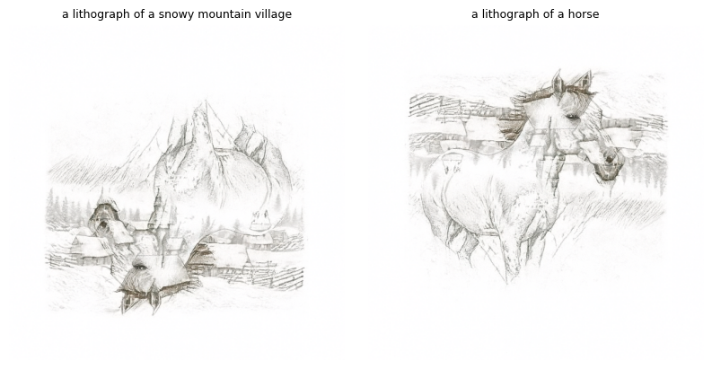
A lithograph of a snowy mountain village vs. a lithograph of a horse
Part 3.4: Hybrid Images
Hybrid images are images that are an average object from two different images. By using a diffusion model to create hybrid image, similar to visual anagrams, we can predict velocities with different prompt embeddings. By combining the high frequencies from one image and the low frequencies from another image, the resulting image up close looks like the high frequency image, and the resulting image far away looks like the low frequency image.
The equations used for generating hybrid images with diffusion models are:
Close: a lithograph of a waterfall (high frequency image)Far: a lithograph of a skull (low frequency image)
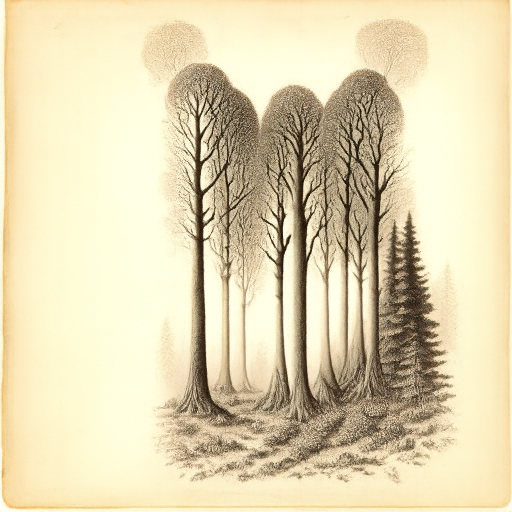
Close: a lithograph of a forest (high frequency image)Distant: a lithograph of a cat (low frequency image)
Part B
Part 1: Training a Single-step Denoising UNet
Part 1.1: Implementing the UNet
UNets consist of an encoder which shrinks the image to a latent space (showing essential features) and a decoder which expands the latent space back to the image space. The encoder processes the image input with a ConvBlock, and DownBlocks downsample the image. Then a Flatten layer uses average pooling to compress the features to a 1x1. After that, an Unflatten layer uses transposed convolution to expand the features back up. Lastly, the decoder upsamples with UpBlocks. Fine details from the original image are preserved because the decoder gets concatenated with the corresponding encoder output.
Part 1.2: Using the UNet to Train a Denoiser
Below are the results from training the UNet to denoise images of digits with a noise level of sigma = [0.0, 0.2, 0.4, 0.5, 0.6, 0.8, 1.0].
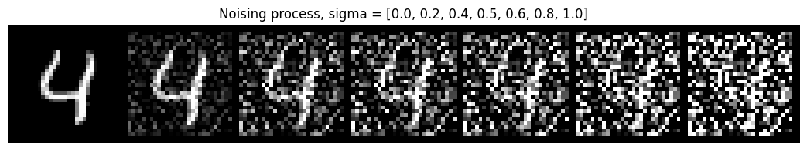
Part 1.2.1: Training
A UNet is a CNN for image-to-image tasks like denoising or generation. Below, we aim to clean up noisy images of digits with a UNET. A denoiser as a UNET learns to remove noise, and the trained model uses the mean squared error loss between the output and the original image to predict what the clean digit should look like. With each batch, new noise was added so that the model learns to clean up noise at level sigma = 0.5.
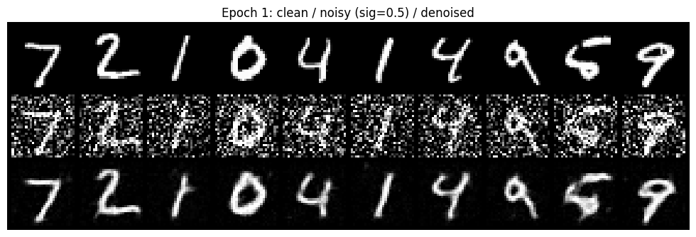
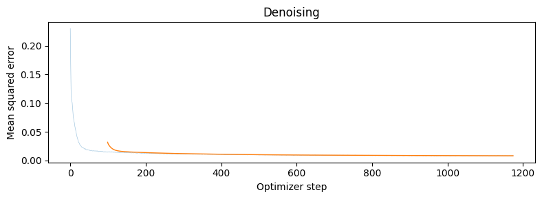
Part 1.2.2: Out-of-Distribution Testing
With the denoiser we trained above, now we can test and visualize its results on different noise levels (sigmas) from 0.0 to 1.0.
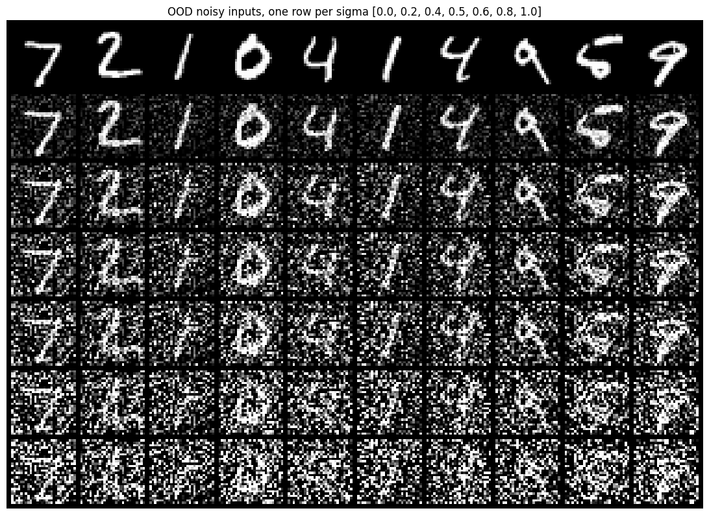
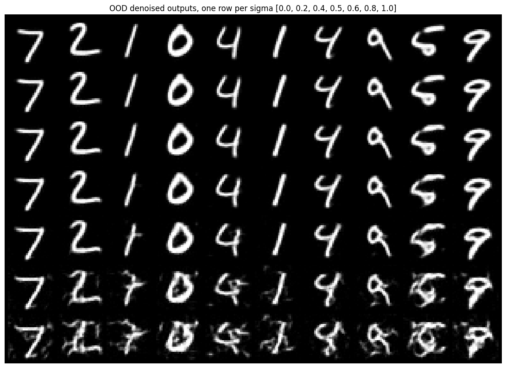
Part 1.2.3: Denoising Pure Noise
Below are the results from denoising pure noise to get a clean image x across 5 epochs as well as a loss plot. In the generated outputs, the results look very similar across epochs with a blurry image, kind of like a "8" or "9" digit. Epoch 5's outputs are slightly more defined than epoch 1's outputs (for example, the tail of the "9" seems less connected from the rounded part of the digit). Epoch 5 is slightly less blurry because when going from epoch to epoch, the model weights are continuously updated to get closer to the pixel-wise mean of the training set of handdrawn digits. The reason for the blurriness overall is because the model takes the average of the MNIST training images, especially at the beginning of training when random noise has no information about digits.
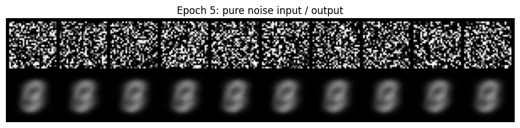
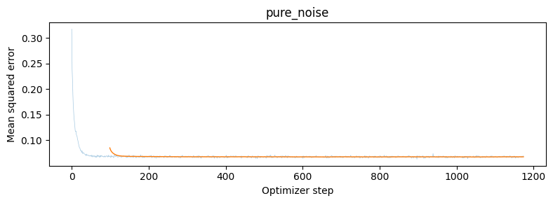
Part 2: Flow Matching
Part 2.1: Implementing a Time-conditioned UNet
A time-conditioned UNet that receives an image and a time step to understand how noisy an image is at that time step during the training process, ranging from t = 0 meaning noisy and t = 1 meaning clean. Two FCBlocks turn the timestep from scalar into vectors, which get multiplied with the output of the Unflatten layer and the output of the first UpBlock, so that the UNet can predict the flow at any given time. This helps us understand progress during training and sample images at different times.
Part 2.2: Training the Time-conditioned UNet
To train the time-conditioned UNet, we train the denoiser to predict the flow at time t with a random noise image from the training set. We use the MNIST dataset with batch size = 64, hidden dimension D = 64, and learning rate = 1e-2. Below is the loss plot for the time-conditioned UNET.
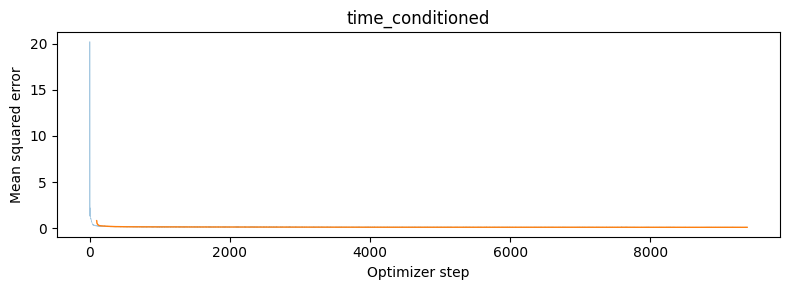
Part 2.3: Sampling from the Time-conditioned UNet
Below are the results from sampling the time-conditioned UNet across 10 epochs.
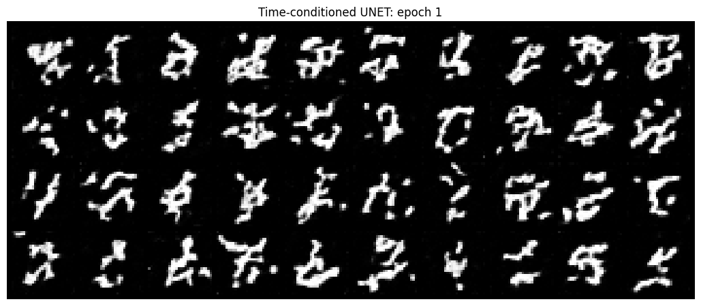
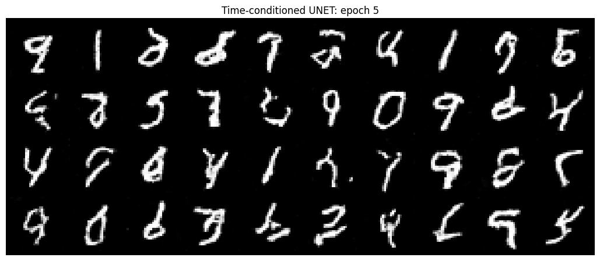
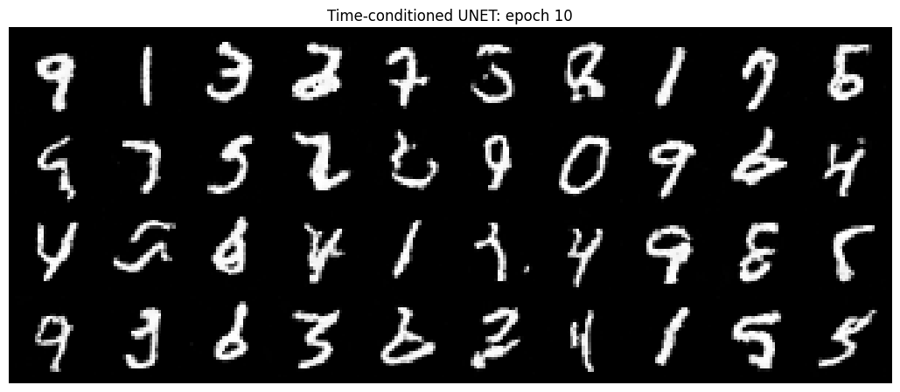
Part 2.4: Implementing a Class-conditioned UNet
One-hot vectors represent class labels, helping us separate and identify each digit from the MNIST dataset. To allow the UNET to understand the class of the input image, we convert each label (0 through 9) into a one-hot vector of length 10 (a list of numbers where it's all zeros except for the index of the digit, which is labeled as 1). This is fed into FCBlocks, where class multiplies the features and time is added, letting the model change its output based on the class (the digit it should be) and time (how noisy the image is).
Part 2.5: Training the Class-conditioned UNet
To train the class-conditioned UNet, the process is comparable to the time-conditioned UNet, except the input is a one-hot conditioning vector c representing the class of the image. Each batch mixes the clean image with noise at a specific timestep t to get a noisy image x_t; then the model predicts the velocity with the mean squared error loss. Additionally, 10% of the time, the label was hidden so that the model learns to predict the velocity without the class information.
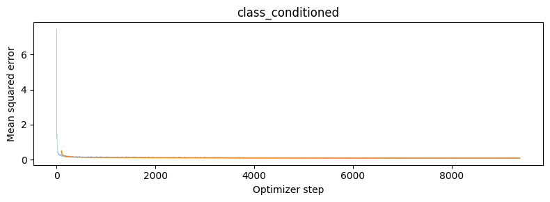
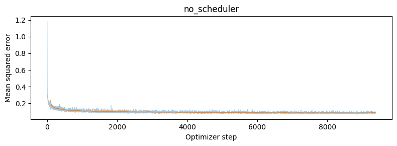
Part 2.6: Sampling from the Class-conditioned UNet
Below are the results from sampling the class-conditioned UNet across 10 epochs with a learning rate starting at 1e-2 and decaying as well as a constant learning rate of 1e-3. To make up for removing the scheduler, we used the constant 1e-3 learning rate since it's the scheduler's final value.